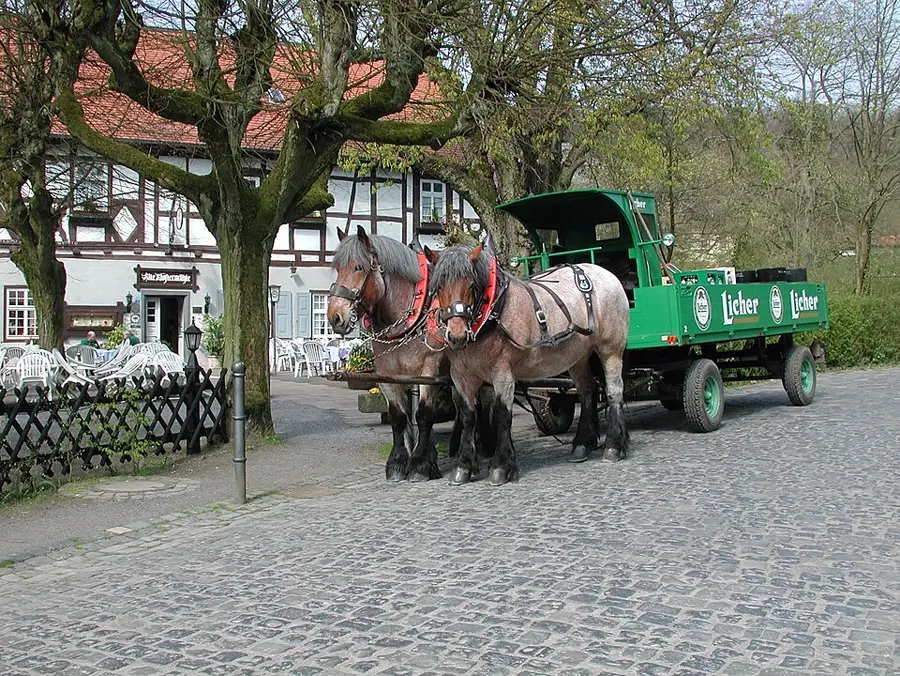

대표 로고대표 브랜드 마크
대표 로고대표 브랜드 마크Licher Brewery
Licher Brewery는 독일 리히에 본사를 둔 맥주 양조장이다. 1854년 Johann Heinrich Ihring이 세운 J.H. Ihring Brewery에서 출발했으며 리히에서 가장 큰 양조장이다.
최종 업데이트
Licher Brewery는 어떤 브랜드인가
Licher Brewery는 독일 리히에 있는 맥주 양조장이다. 1854년 J.H.
Ihring Brewery로 문을 열었고, 1922년 인근 양조장과 합쳐 Brauerei Ihring-Melchior가 되었다. 'Licher Beer'는 1988년부터 헤센에서 시장 선두를 지켜 왔다.
독일 맥주 시장에서 상위 20위 안에 드는 맥주 가운데 하나로 알려져 있다. 직원은 250명으로 리히에서 가장 큰 양조장이며, 생산은 DIN/ISO 9001 요건에 따라 이루어진다.
1999년에는 Holstein-Brauerei AG의 일부를 사들였고, 2004년부터는 König Brewery와 협력하고 있다.
Licher Brewery는 어떻게 시작되고 성장했나
1854년 양조업자 Johann Heinrich Ihring이 Lich am Hardtberg에서 J.H. Ihring Brewery를 시작했다.
이곳에는 천연 샘과 맥주를 식히는 발효 저장고가 있었고, 1873년부터 증기 양조 공정을 6마력 모터로 가동했다. Gambrinus-Brewery의 뿌리는 1858년 Christoph Jakob Melchior가 부츠바흐에서 여관 'Zum goldenen Stern'을 운영하며 직접 빚은 맥주를 손님에게 낸 데 있다.
두 양조장은 15km 떨어져 있었고, 1922년 2월 17일 합의로 Brauerei Ihring-Melchior가 설립되었으며 같은 해 10월 1일 소재지가 리히로 정해졌다.
Licher Brewery의 브랜드 아이덴티티는 무엇인가
리히에서 가장 큰 양조장으로, 1922년 두 지역 양조장의 합병으로 출발해 1988년부터 헤센 시장 선두를 지켜 왔다.
Licher Brewery의 대표 제품과 서비스는 무엇인가
대표 제품은 Licher Beer이다. 1948년 수출이 허용되자 Doppel-Export(Double-Export)를 생산했고, 이 제품은 14%의 시장 점유율을 차지했다.
1938년에는 병을 세척하고 채우는 새로운 방식을 도입했다. 2006년부터 Licher 계약 아래 운영되는 두 병입 시설은 시간당 115,000병을 생산할 수 있다.
Licher Brewery는 지금 어떤 상태인가
현재 직원은 250명이며 리히에서 가장 큰 양조장이다. 2004년부터 Bitburger 소유의 König Brewery와 파트너로 협력하고 있다.
회사는 DIN/ISO 9001 요건에 따라 운영되고 International Food Standard(IFS)의 모든 요건을 충족한다. 헤센 주 환경부는 이 회사의 생산 과정이 매우 깨끗하다고 평가했다.
Licher Brewery 로고는 어떻게 변해왔나
대표 로고대표 브랜드 마크사진으로 보는 Licher Brewery의 역사

자주 묻는 질문
Licher Brewery는 어느 나라 브랜드인가요?
Licher Brewery는 독일의 식음료 브랜드입니다.
Licher Brewery는 언제 설립되었나요?
Licher Brewery는 1854년 설립되었습니다.
Licher Brewery의 브랜드 아이덴티티는 무엇인가요?
리히에서 가장 큰 양조장으로, 1922년 두 지역 양조장의 합병으로 출발해 1988년부터 헤센 시장 선두를 지켜 왔다.
Licher Brewery의 대표 제품은 무엇인가요?
대표 제품은 Licher Beer이다.
Licher Brewery는 현재 어떤 상태인가요?
현재 직원은 250명이며 리히에서 가장 큰 양조장이다.
Licher Brewery의 본사는 어디에 있나요?
Licher Brewery의 본사는 리히에 있습니다(위키데이터 기준).
Licher Brewery의 공식 웹사이트는 어디인가요?
Licher Brewery의 공식 웹사이트는 http://www.licher.de 입니다.
출처와 검증
Licher Brewery 관련 참고: 공식 웹사이트 · 위키데이터 Q204880 · 영어 위키백과. 브랜드명은 한글과 원어를 함께 표기하되 데이터에 없는 표기는 만들지 않습니다. 기원 국가·설립연도는 검수된 정의문에서 확인된 값을 우선하고, 없을 때만 공식 웹사이트 URL이 일치하는 위키데이터 개체의 값을 씁니다. 위키데이터 값은 2026-11-10 기준입니다.